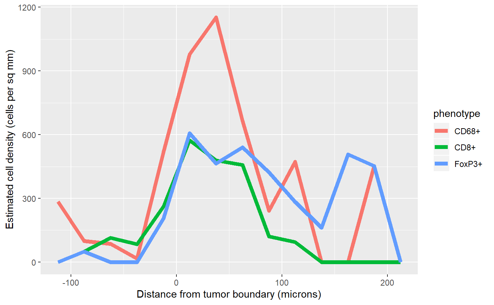

Given a cell seg table and an image containing masks for two tissue classes, estimate the density of cells of each specified phenotype in bands from the boundary between the two tissue classes.
density_bands(
cell_seg_path,
phenotypes,
positive,
negative,
width = 25,
map_path = NULL,
component_path = NULL
)Path to a cell segmentation data file.
Optional named list of phenotypes to process.
names(phenotypes) are the names of the resulting phenotypes.
The values are in any format accepted by select_rows.
If omitted, will use all phenotypes in the cell seg data.
Name of the tissue category used as positive distance, e.g. "stroma".
Name of the tissue category used as negative distance, e.g. "tumor".
Width of the bands, in microns
Path to the segmentation map file. If NULL, look for the
map in the same directory as cell_seg_path.
Path to the component_data file corresponding to
cell_seg_path; if omitted, look for the component data file in the
same directory as cell_seg_path.
Returns a list with three items:
densitiesA tibble with five columns (see below).
cellsCell seg data with phenotypes updated per the phenotypes
parameter and an additional distance column.
distanceThe distance map, a pixel image
(im.object).
The densities item contains five columns:
phenotypeThe supplied phenotypes.
midpointThe midpoint of the distance band.
countThe number of cells of the phenotype found within the band.
areaThe area of the band, in square microns.
densityThe density of cells of the phenotype in the band, in cells per square micron.
density_bands uses a counting approach similar to a histogram.
First the image is divided into bands based on distance from the
specified boundary. Next, the number of cells of each phenotype
within each distance band is counted and the area of each band
is estimated. The density estimates are the ratios of the cell
counts to the area estimates.
Density estimates are in cells per square micron; multiply by 1,000,000 for cells per square millimeter.
The returned value includes the cell counts and area of each band, making it straightforward to aggregate across multiple fields from a single sample. The aggregate density is computed by summing the cell counts and areas across all fields from a sample, then dividing to compute density.
Other density estimation:
density_at_distance()
# Compute density for the sample data
values <- density_bands(sample_cell_seg_path(),
list("CD8+", "CD68+", "FoxP3+"),
positive="Stroma", negative="Tumor")
# Plot the densities in a single plot
library(ggplot2)
ggplot(values$densities, aes(midpoint, density*1000000, color=phenotype)) +
geom_line(size=2) +
labs(x='Distance from tumor boundary (microns)',
y='Estimated cell density (cells per sq mm)')
